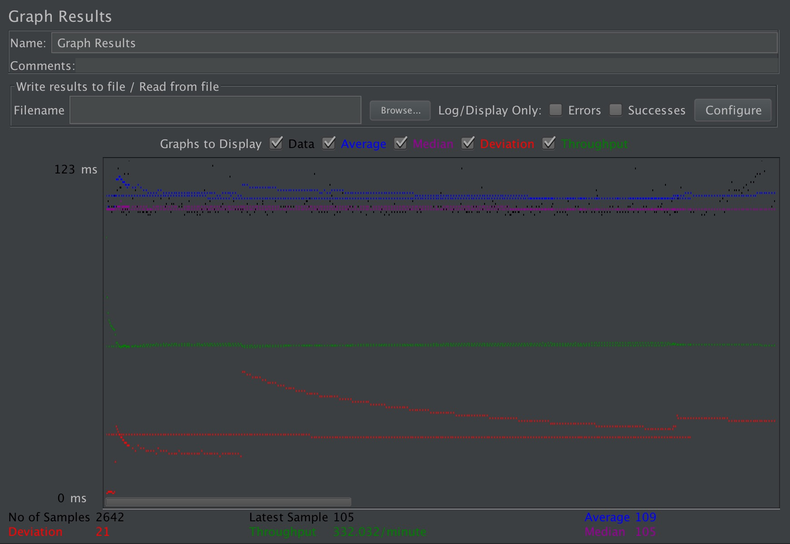
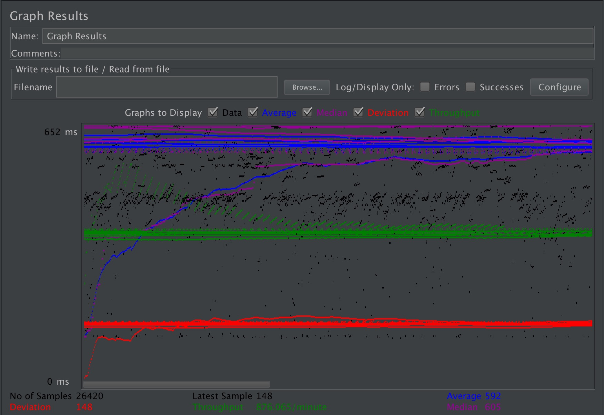
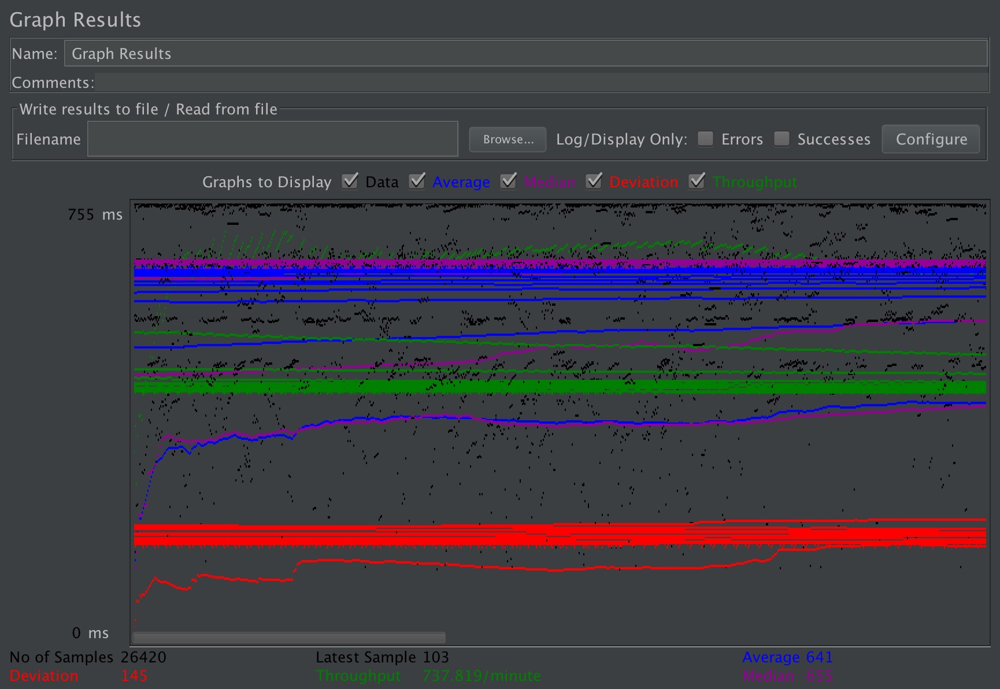
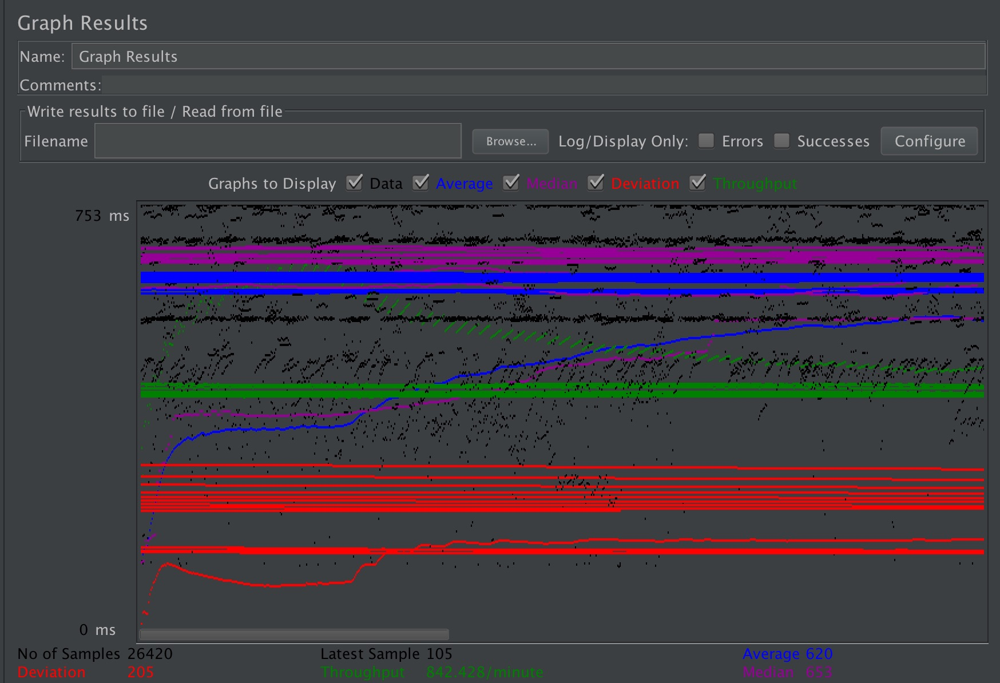
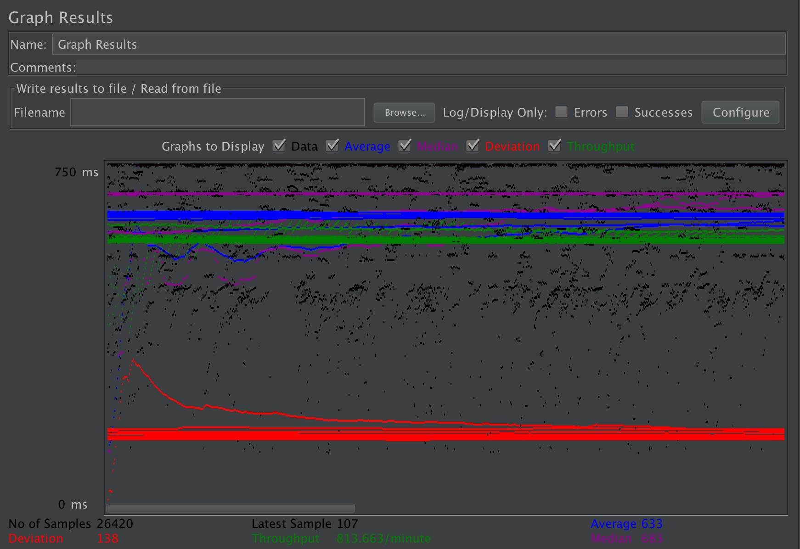

| Single-instance version cases |
Graph Results Screenshot |
Average Query Time(ms) |
Average Search Servlet Time(ms) |
Average JDBC Time(ms) |
Analysis |
| Case 1: HTTP/1 thread |
 |
109 ms |
42379471.4489 ns |
42188464.9977 ns |
-- |
| Case 2: HTTP/10 threads |
 |
592 ms |
384812281.564 ns |
384698462.084 ns |
-- |
| Case 3: HTTPS/10 threads |
 |
641 ms |
388747542.48 ns |
388588796.112 ns |
-- |
| Case 4: HTTP/10 threads/No prepared statements |
 |
620 ms |
387188088.61 ns |
387064892.228 ns |
-- |
| Case 5: HTTP/10 threads/No connection pooling |
 |
633 ms |
396295018.681 ns |
396105086.474 ns |
-- |